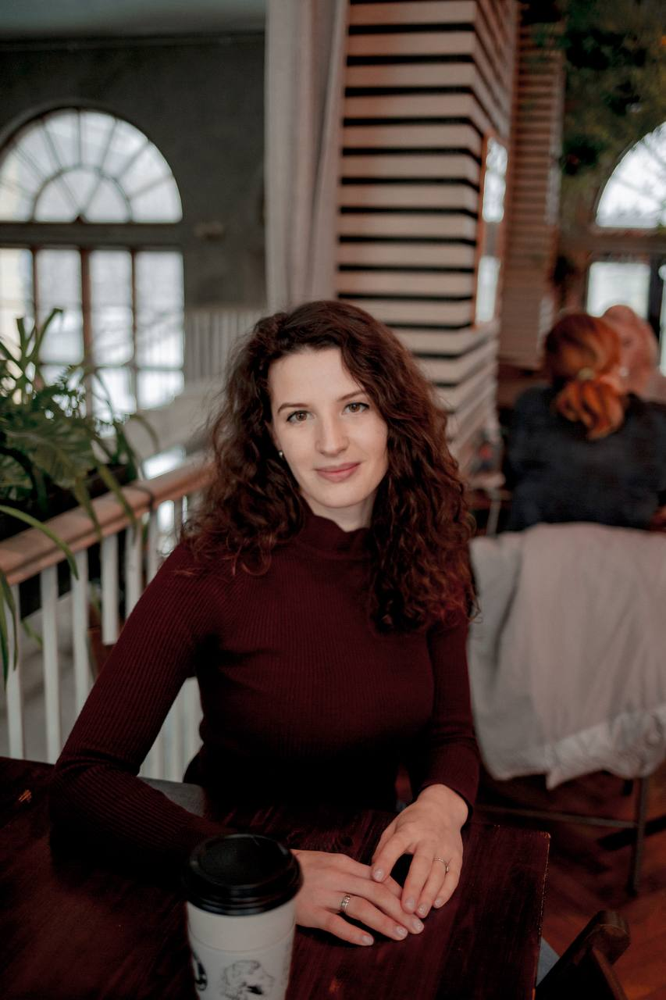
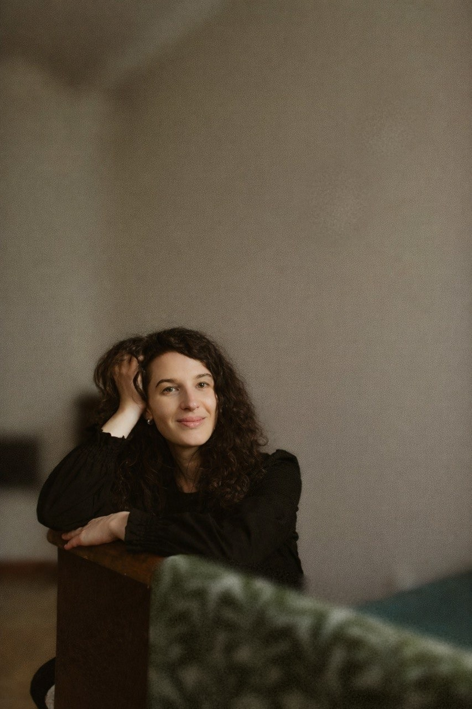

Психолог · немедицинский психотерапевт
В терапии вы можете не стараться, а быть собой и замечать, как рядом с людьми становится спокойнее, а с собой теплее
Выбрать время
Трудно доверять людям
Стыдно просить о помощи
Хочется близости, но она пугает
Кажется, что с вами что-то не так
Иногда этому просто негде было научиться.
Сейчас такой опыт появляется в отношениях, где безопасно.
С чем ко мне приходят
Боитесь разочаровать других и редко чувствуете, что достаточно хороши. Даже когда всё получается, кажется, что это случайность
С партнёром одни и те же ссоры, с родителями вина, с ребёнком усталость и раздражение. Хотя вы очень стараетесь
Вы привыкли быть опорой для всех, а сказать «нет» почти невозможно. И вашу усталость никто не замечает
Хочется общаться и дружить, но разговор не складывается, а отношения не становятся ближе. И непонятно, что вы делаете не так
Переезд, рождение ребёнка, расставание: адрес или роль поменялись. А вместе с ними исчезло привычное ощущение себя
Трудно говорить о своих желаниях, тело вызывает смущение, а секс стал тем, чего хочется избегать. И кажется, что обсудить это не с кем
Не обязательно заранее формулировать запрос, разберёмся вместе.
Что даёт терапия
Появляется больше уверенности, ощущения себя и лёгкости с людьми
Это не происходит за пару встреч, изменения складываются постепенно. Но обычно их начинают замечать не только вы, но и люди рядом.
Как я работаю
Нас меняют отношения, в которых не нужно заслуживать принятие
Ко мне часто приходят люди, уже многое о себе понимая. Прочитаны книги, понятны причины. Но понимание не всегда меняет то, как вы чувствуете себя рядом с людьми, потому что этому учатся не из книг, а в отношениях.
В терапии мы как раз создаём такие отношения, где можно сомневаться, ошибаться, злиться или молчать и оставаться в контакте. Постепенно этот опыт начинает переноситься в жизнь: к партнёру, друзьям, родителям, к себе.
Сначала просто познакомимся. Вы расскажете, что беспокоит, и посмотрите, комфортно ли вам со мной.
Дальше регулярные встречи, обычно раз в неделю.
Темп выбираете вы.
Мы замечаем, какими вы бываете с собой и другими, и пробуем по-новому прямо здесь, на сессиях.
Со временем вы переносите это в жизнь: учитесь замечать себя и свои изменения.
Мой основной метод — позитивная психотерапия.
Опираюсь на теорию привязанности, современные подходы к работе с травмой и КПТ.
Регулярно прохожу супервизию и личную терапию.

Обо мне
Сейчас ко мне приходят в основном взрослые. Но многое я поняла раньше, за шесть лет работы с детьми и их родителями в школе и Монтессори-центре. Я видела, откуда берутся наши привычные способы справляться и почему они остаются с нами, даже когда давно не нужны.
С 2019 года я в частной практике.И, если честно, больше всего люблю момент, когда человека становится видно: он расслабляется и перестаёт прятаться. А потом приходит и рассказывает, как по-другому поговорил с мамой, с партнёром, с другом.
Форматы и стоимость
50 минут
По видеосвязи из любого города и страны.
5 500 ₽55 € · $55
50 минут
В кабинете в Санкт-Петербурге.
6 000 ₽60 € · $60
1,5 часа
Когда хочется разобраться в отношениях вместе.
8 000 ₽80 € · $80
Онлайн-запись
Выберите удобное окошко.
Если подходящего нет, напишите в Telegram, и мы что-нибудь придумаем.
Достаточно написать и задать вопрос. Это ни к чему не обязывает.
Telegram @kseniakell · WhatsApp +7 951 670-97-22
Всё, что вы расскажете, остаётся между нами